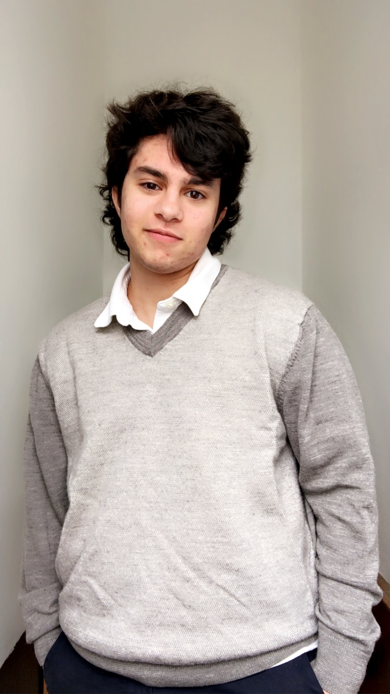

Multimedia journalism
I am a multimedia journalism major at the University of Maryland with a concentration is film studies. I focus on the production aspect of news reporting such as documentary work, photojournalism, layout design for tabloids or newspapers and being part of a production crew in a broadcast studio.
Worked on layout design for print news until it became online March 2020. Creates layout designs using InDesign and Photoshop for tabloids and guides.
Organizes checks and balances of payments and vaccination records. Checks for price matches and that all documents in each server or website is the same throughout.
Began as a camera volunteer, moved up to floor directing and currently working on learning technical directing and sound for the production.
Videotaping professional development sessions, data processing and some transcriptions of videotapes.
Edits different videos for a variety of people, including a more consistent basis on a fitness YouTube channel, Maria Rossi Fitness, since February 2020.
Have created many designs for multiple clubs in high school and in college. Including SEDS@UMD designs and website management, as well as social media management.
Created a documentary as a single-man crew about a transgender man named Samuel Uder who was born into a Mormon family. Filmed interviews and b-roll, edited the content and published it on YouTube.